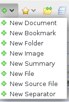
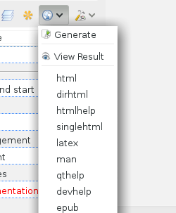
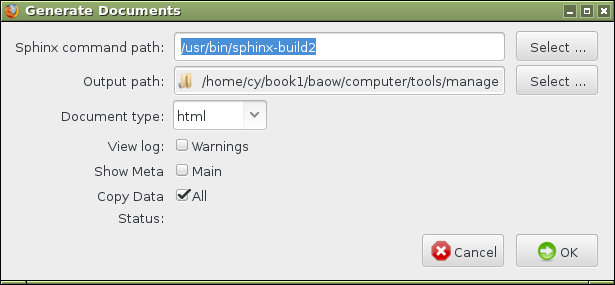
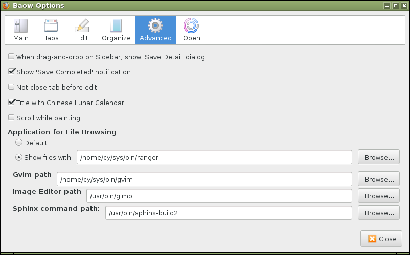

Edit documents¶
Open Firefox browser, and select the menu
Click the menu from the sidebar, and input text, edit in new opened tab editor, and click Save button.

Click button
 from the sidebar.
from the sidebar.
Select your sphinx build command path, and output path, click Ok .

OK, you got full features web documents.
Gvim editor¶
You can configure Gvim editor path in Options windows.
